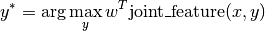
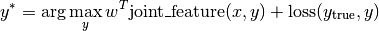

#FIXME make clear what is learned!!
This page explains how to use the most common of the implemented models. Each model corresponds to a differents structured prediction task, or possibly a different parametrization of the model. As such, the training data X and training labels Y has slightly different forms for each model.
A model is given by four functions, joint_feature, inference, loss and loss_augmented_inference. If you just want to use the included models, you don’t need to worry about these, and can just use the fit, predict interface of the learner.
For those interested in what happens behind the scenes, or those who might want to adjust a model, there is a short explanation of these functions for each model below. For all models, the joint_feature(x, y) function takes a data point and a tentative prediction, and computes a continuous vector of a fixed length that captures the relation between features and label. Learning (that is learner.fit(X, y)) will learn a parameter vector w, and predictions will be made using

That means the number of parameters in the model is the same as the dimensionality of joint_feature.
The actual maximization is performed in the inference(x, w) function, which takes a sample x and a parameter vector w and outputs a y^*, which (at least approximately) maximizes the above equation.
The loss(y_true, y_pred) function gives a numeric loss for a ground truth labeling y_true and a prediction y_pred, and finally loss_augmented_inference(x, y, w) gives an (approximate) maximizer for

A good place to understand these definitions is Multi-class SVM.
Note
Currently all models expect labels to be integers from 0 to n_states (or n_classes). Starting labels at 1 or using other labels might lead to errors and / or incorrect results.
A precursor for structured SVMs was the multi-class SVM by Crammer and Singer. While in practice it is often faster to use an One-vs-Rest approach and an optimize binary SVM, this is a good hello-world example for structured predicition and using pystruct. In the case of multi-class SVMs, in contrast to more structured models, the labels set Y is just the number of classes, so inference can be performed by just enumerating Y.
Lets say we want to classify the classical iris dataset. There are three classes and four features:
>>> from sklearn.datasets import load_iris
>>> iris = load_iris()
>>> iris.data.shape, iris.target.shape
((150, 4), (150,))
>>> np.unique(iris.target)
[0, 1, 2]
We split the data into training and test set:
>>> X_train, X_test, y_train, y_test = cross_validation.train_test_split(
... iris.data, iris.target, test_size=0.4, random_state=0)
The Crammer-Singer model implemented in MultiClassClf. As this is a simple multi-class classification task, we can pass in training data as numpy arrays of shape (n_samples, n_features) and training labels as numpy array of shape (n_samples,) with classes from 0 to 2.
For training, we pick the learner learners.NSlackSSVM, which works well with few samples and requires little tuning:
>>> from pystruct.learners import NSlackSSVM
>>> from pystruct.models import MultiClassClf
>>> clf = NSlackSSVM(MultiClassClf())
The final model the same interface as a scikit-learn estimator:
>>> clf.fit(X_train, y_train)
>>> clf.predict(X_test)
>>> clf.score(X_test, y_test)
For this simple model, the joint_feature(x, y) is a vector of size n_features * n_classes, which corresponds to one copy of the input features for each possibly class. For any given pair (x, y) the features in x will be put at the position corresponding to the class in y. Correspondingly, the weights that are learned are one vector of length n_features for each class: w = np.hstack([w_class_0, ..., w_class_1]).
For this simple model, and inference is just the argmax over the inner product with each of these w_class_i:
>>> y_pred = np.argmax(np.dot(w.reshape(n_classes, n_features), x))
To perform max-margin learning, we also need the loss-augmented inference. PyStruct has an optimized version, but a pure python version would look like this:
>>> scores = np.dot(w.reshape(n_classes, n_features), x)
>>> scores[np.arange(n_classes) != y] += 1
>>> y_pred = np.argmax(scores)
Essentialy the response (score / energy) of wrong label is down weighted by 1, the loss of doing an incorrect prediction.
A multi-label classification task is one where each sample can be labeled with any number of classes. In other words, there are n_classes many binary labels, each indicating whether a sample belongs to a given class or not. This could be treated as n_classes many independed binary classification problems, as the scikit-learn OneVsRest classifier does. However, it might be beneficial to exploit correlations between labels to achieve better generalization.
In the scene classification dataset, each sample is a picture of an outdoor scene, representated using simple color aggregation. The labels characterize the kind of scene, which can be “beach”, “sunset”, “fall foilage”, “field”, “mountain” or “urban”. Each image can belong to multiple classes, such as “fall foilage” and “field”. Clearly some combinations are more likely than others.
We could try to model all possible combinations, which would result in a 2 ** 6 = 64 class multi-class classification problem. This would allow us explicitly model all correlations between labels, but it would prevent us from predicting combinations that don’t appear in the training set. Even if a combination did appear in the training set, the numer of samples in each class would be very small. A compromise between modeling all correlations and modelling no correlations is modeling only pairwise correlations, which is the approach implemented in MultiLabelClf. It creates a graph over n_classes binary nodes, together with edges between each pair of classes. Each binary node has represents one class, and therefor will get its own column in the weight-vector, similar to the crammer-singer multi-class classification.
In addition, there is a pairwise weight betweent each pair of labels. This leads to a feature function of this form:
If our graph has only 6 nodes, we can actually enumerate all states. Unfortunately, in general, inference in a fully connected binary graph is in gerneral NP-hard, so we might need to rely on approximate inference, like loopy believe propagation or AD3. #FIXME do enumeration! benchmark!!
The input to this model is similar to the Multi-class SVM, with the training data X_train simple a numpy array of shape (n_samples, n_features) and the training labels a binary indicator matrix of shape (n_samples, n_classes).
An alternative to using approximate inference for larger numbers of labels is to not create a fully connected graph, but restrict ourself to pairwise interactions on a tree over the labels. In the above example of outdoor scenes, some labels might be informative about others, maybe a beach picture is likely to be of a sunset, while an urban scene might have as many sunset as non-sunset samples. The optimum tree-structure for such a problem can easily be found using the Chow-Liu tree, which is simply the maximum weight spanning tree over the graph, where edge-weights are given by the mutual information between labels on the training set. You can use the Chow-Liu tree method simply by specifying edges="chow_liu". This allows us to use efficient and exact max-product message passing for inference.
#FIXME sample
#FIXME reference joachims
The implementation of the inference for this model creates a graph with unary potentials (given by the inner product of features and weights), and pairwise potentials given by the pairwise weight. This graph is then passed to the general graph-inference, which runs the selected algorithm.
The following models are all pairwise models over nodes, that is they model a labeling of a graph, using features at the nodes, and relation between neighboring nodes. The main assumption in these models in PyStruct is that nodes are homogeneous, that is they all have the same meaning. That means that each node has the same number of classes, and these classes mean the same thing. In practice that means that weights are shared across all nodes and edges, and the model adapts via features. This is in contrast to the MultiLabelClf, which builds a binary graph were nodes mean different things (each node represents a different class), so they do not share weights.
Note
I call these models Conditional Random Fields (CRFs), but this a slight abuse of notation, as PyStruct actually implements perceptron and max-margin learning, not maximum likelihood learning. So these models might better be called Maximum Margin Random Fields. However, in the computer vision community, it seems most pairwise models are called CRFs, independent of the method of training.
One of the most common use-cases for structured prediction is chain-structured outputs. These occur naturaly in sequence labeling tasks, such as Part-of-Speech tagging or named entity recognition in natural language processing, or segmentation and phoneme recognition in speech processing.
As an example dataset, we will use the toy OCR dataset letters. In this dataset, each sample is a handwritten word, segmented into letters. This dataset has a slight oddity, in that the first letter of every word was removed, as it was capitalized, and therefore different from all the other letters.
Each letter is a node in our chain, and neighboring letters are connected with an edge. The length of the chain varies with the number of letters in the word. As in all CRF-like models, the nodes all have the same meaning and share parameters.
The training data is a list of samples, where each sample is a numpy array of shape (n_nodes, n_features), where n_nodes is the length of the input sequence, that is the length of the word in our case. Edges don’t need to be specified, as the input features are assumed to be in the order of the nodes in the chain. The default inference method is max-product message passing on the chain (aka viterbi), which is always exact and efficient.
# FIXME code
The unary potentials in each node are given as the inner product of the features at this node (the input image) with the weights (which are shared over all nodes):
The pairwise potentials are identical over the whole chain and given simply by the weights:
In principle it is possible to also use feature in the pairwise potentials. This is not implemented in the ChainCRF, but can be done using EdgeFeatureGraphCRF.
Note
While pystruct is able to work with chain CRFs, it is not explicitly built with these in mind, and there are libraries that optimize much more for this special case, such as seqlearn and CRF++.
This model is a generalization of the ChainCRF to arbitray graphs.
To the basic model is the same as the ChainCRF model, with unary potentials given as a shared linear function of the features, and pairwise potentials the same for all nodes.
This model is the most general of the CRF models, and contains all others as a special case. This model assumes again that the parameters of the potentials are shared over all nodes and over all edges, but the pairwise potentials are now also computed as a linear function of the features.
TODO
TODO
TODO
TODO